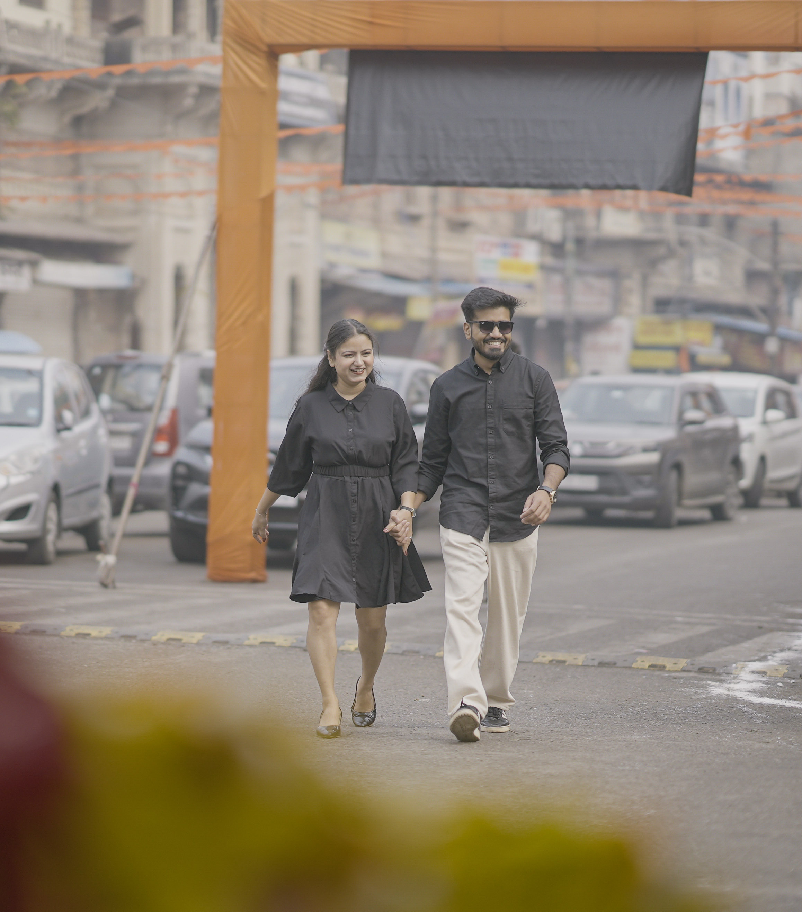
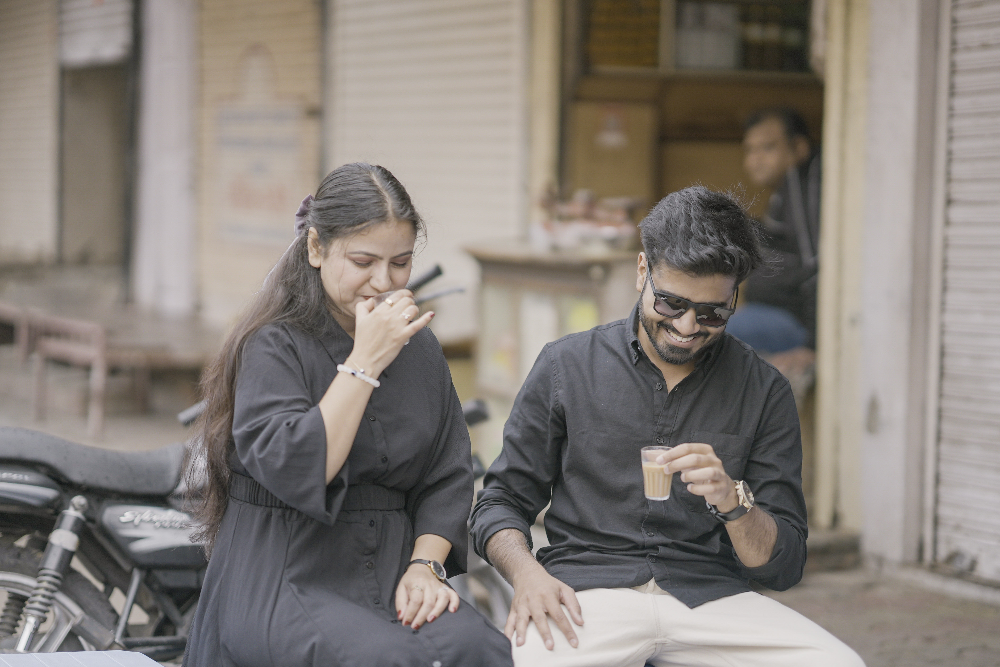
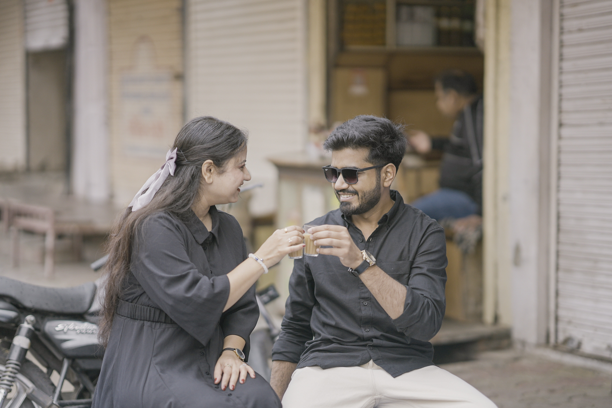
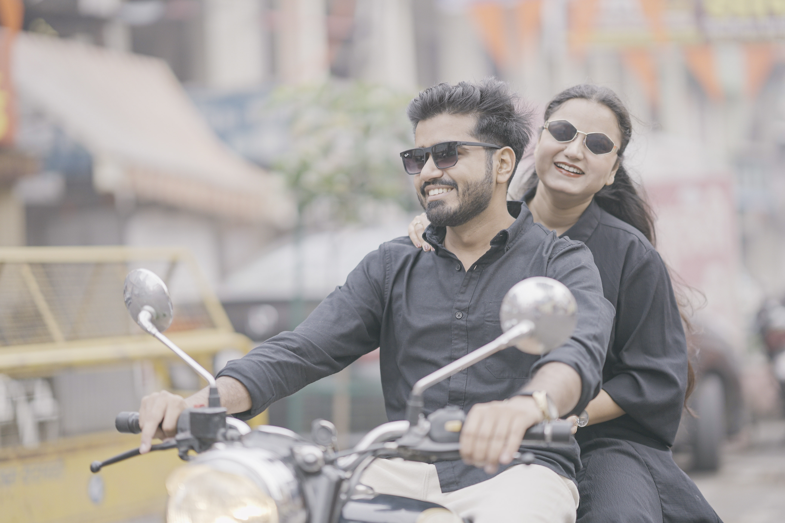

1 / 5

01 — Kota Diaries
It Started With a Walk in Rampura
02 — Kota Diaries
Balance on Wheels, Chaos in Hearts

03 — Kota Diaries
One Chai, Two Hearts, Unlimited Talks

04 — Kota Diaries
Cheers to Us (With Cutting Chai ☕)

05 — Kota Diaries
From Rampura Streets to Forever Routes
← → arrow keys to navigate · space to pause